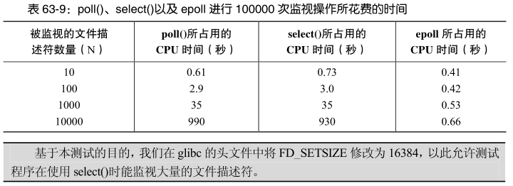
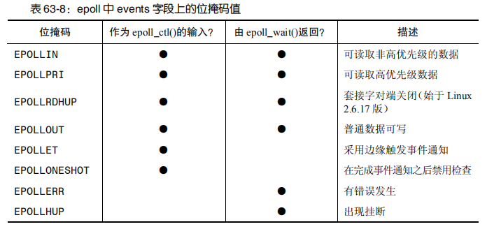
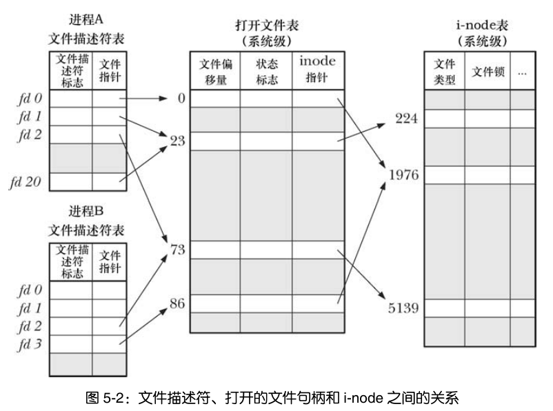

网络编程-IO复用
I/O模型 Unix下可用的I/O模型有五种：
阻塞式I/O
非阻塞式I/O
I/O复用（select和poll、epoll）
信号驱动式I/O（SIGIO）
异步I/O（POSIX的aio_系列函数）
详见Unix网络编程卷一第六章
I/O复用 select()和poll()在Unix系统中存在时间长，主要优势在于可移植性，主要缺点在于当同时检查大量的文件描述符时性能拓展性不佳。
epoll API的关键优势在于能让应用高效地检查大量的文件描述符，主要缺点是专属于Linux系统的API。

I/O复用-select select()首次出现在BSD系统的套接字API中。
select()系统调用的用途：在一段指定的时间内，监听用户感兴趣的文件描述符上的可读、可写和异常事件。
系统调用select()会一直阻塞，直到一个或多个文件描述符集合成为就绪态。
#include <sys/select.h> #include <sys/time.h> int select (int maxfdp1, fd_set *readset, fd_set *writeset, fd_set *exceptset, const struct timeval *timeout)
探究下fd_set的结构
#define __FD_SETSIZE 1024 typedef long int __fd_mask;#define __NFDBITS (8 * (int) sizeof (__fd_mask)) typedef struct {
select()程序示例：
#include <sys/types.h> #include <sys/socket.h> #include <netinet/in.h> #include <arpa/inet.h> #include <assert.h> #include <stdio.h> #include <unistd.h> #include <errno.h> #include <string.h> #include <fcntl.h> #include <stdlib.h> #include <stdarg.h> static void usageError (const char * progName) fprintf (stderr , "Usage: %s {timeout | -} fd-num[rw]...\n" , progName);fprintf (stderr , " - means infinite timeout; \n" );fprintf (stderr , " r = monitor for read\n" );fprintf (stderr , " w = monitor for wirite\n\n" );fprintf (stderr , " e.g.: %s - 0rw 1w\n" , progName);exit (1 );void cmdLineErr (const char *format, ...) stdout ); fprintf (stderr , "Command-line usage error: " );vfprintf (stderr , format, argList);stderr ); exit (EXIT_FAILURE);int main (int argc, char * argv[]) int ready, nfds, fd, numRead, j;struct timeval timeout ;struct timeval *pto ;char buf[10 ];if (argc < 2 || strcmp (argv[1 ], "--help" ) == 0 ){0 ]);if (strcmp (argv[1 ], "-" ) == 0 ){NULL ;else {1 ], NULL , 0 );0 ;0 ;for (j = 2 ; j < argc; j++){sscanf (argv[j], "%d%2[rw]" , &fd, buf);if (numRead != 2 ){0 ]);if (fd >= FD_SETSIZE){"file descriptor exceeds limit (%d)\n" , FD_SETSIZE);if (fd >= nfds){1 ;if (strchr (buf, 'r' ) != NULL ){if (strchr (buf, 'w' ) != NULL ){NULL , pto);if (ready == -1 ){printf ("errExit(select)" );exit (1 );printf ("ready = %d\n" , ready);for (fd = 0 ; fd < nfds; fd++){printf ("%d: %s%s\n" ,fd, FD_ISSET(fd, &readfds) ? "r" : "" , "w" : "" );if (pto != NULL ){printf ("timeout after select(): %ld.%03ld\n" ,long ) timeout.tv_sec, (long ) timeout.tv_usec / 1000 );exit (0 );
select处理正常数据和带外数据：
#include <sys/types.h> #include <sys/socket.h> #include <netinet/in.h> #include <arpa/inet.h> #include <assert.h> #include <stdio.h> #include <unistd.h> #include <errno.h> #include <string.h> #include <fcntl.h> #include <stdlib.h> int main (int argc, char * argv[]) if (argc <= 2 ){printf ("usage: %s ip_adress port_number\n" , basename(argv[0 ]));return 1 ;const char * ip = argv[1 ];int port = atoi(argv[2 ]);int ret = 0 ;struct sockaddr_in address ;sizeof (address));int listenfd = socket(PF_INET, SOCK_STREAM, 0 );0 );sizeof (address));-1 );5 );-1 );struct sockaddr_in client_address ;socklen_t client_addrlength = sizeof (client_address);int connfd = accept(listenfd, (struct sockaddr*)&client_address, &client_addrlength);if (connfd < 0 ){printf ("error is: %d\n" , errno);char buf[1024 ];while (true ){memset (buf, '\0' , sizeof (buf));1 , &read_fds, NULL , &exception_fds, NULL );if (ret < 0 ){printf ("selection failure\n" );break ;if (FD_ISSET(connfd, &read_fds)){sizeof (buf)-1 , 0 );if (ret <= 0 ){break ;printf ("get %d bytes of normal data: %s\n" , ret, buf);else if (FD_ISSET(connfd, &exception_fds)){sizeof (buf)-1 , MSG_OOB);if (ret <= 0 ){break ;printf ("get %d bytes of oob data: %s\n" , ret, buf);return 0 ;
I/O复用-poll poll函数起源于SVR3，最初局限于流设备，SVR4取消了这种限制，允许poll工作在任何描述符上。
poll提供的功能与select类似，不过在处理流设备时，它能够提供额外的信息。
#include <poll.h> struct pollfd {int fd;short events; short revents;int poll (struct pollfd *fdarray, unsigned long nfds, int timeout)
select()同poll()返回正整数的区别：如果一个文件描述符在返回的集合中出现了不止一次，系统调用select()会将同一个文件描述符计数多次。而系统调用poll()返回的是就绪态文件描述符个数，且一个文件描述符只会统计一次，就算在相应的revents字段中设定了多个位掩码也是如此。
poll示例程序：
#include <time.h> #include <poll.h> #include <sys/types.h> #include <sys/socket.h> #include <netinet/in.h> #include <arpa/inet.h> #include <assert.h> #include <stdio.h> #include <unistd.h> #include <errno.h> #include <string.h> #include <fcntl.h> #include <stdlib.h> #include <stdarg.h> static void usageError (const char * progName) fprintf (stderr , "Usage: %s {timeout | -} fd-num[rw]...\n" , progName);fprintf (stderr , " - means infinite timeout; \n" );fprintf (stderr , " r = monitor for read\n" );fprintf (stderr , " w = monitor for wirite\n\n" );fprintf (stderr , " e.g.: %s - 0rw 1w\n" , progName);exit (1 );int main (int argc, char * argv[]) int numPipes, j, ready, randPipe, numWrites;int (*pfds)[2 ];struct pollfd *pollFd ;if (argc < 2 || strcmp (argv[1 ], "--help" ) == 0 ){printf ("%s num-pipes [num-writes]\n" , argv[0 ]);exit (1 );1 ], NULL , 10 );int (*)[2 ])calloc (numPipes, sizeof (int [2 ]));if (pfds == NULL ){printf ("error malloc" );exit (1 );calloc (numPipes, sizeof (struct pollfd));if (pollFd == NULL ){printf ("error malloc" );exit (1 );for (j = 0 ; j < numPipes; j++){if (pipe(pfds[j]) == -1 ){printf ("error pipe %d" , j);exit (1 );2 ) ? strtol(argv[2 ], NULL , 10 ) : 1 ;int )time(NULL ));for (j = 0 ; j < numWrites; j++){printf ("Writing to fd: %3d (read fd: %3d)\n" ,1 ], pfds[randPipe][0 ]);if (write(pfds[randPipe][1 ], "a" , 1 ) == -1 ){printf ("write %d" , pfds[randPipe][1 ]);exit (1 );for (j = 0 ; j < numPipes; j++){0 ];-1 );if (ready == -1 ){printf ("poll error" );exit (1 );printf ("poll() returned: %d\n" , ready);for (j = 0 ; j < numPipes; j++){if (pollFd[j].revents & POLLIN){printf ("Readable: %d %3d\n" , j, pollFd[j].fd);return 0 ;
I/O复用-epoll epoll API由三组系统调用组成;
epoll_create()创建一个epoll实例
epoll_ctl()操作同epoll实例相关联的兴趣列表
epoll_wait()返回与epoll相关联的就绪列表中的成员
epoll实例：epoll API的核心数据结构，和一个打开的文件描述符相关联。这个文件描述符不用来做IO操作，相反它是内核数据结构的句柄，这些内核数据结构实现了两个目的：
epoll_create #include <sys/epoll.h> int epoll_create (int size)
参数size指定我们想要通过epoll实例来检查的描述符个数，不是上限，只是告知内核应该如何为内部数据结构划分初始大小。
函数返回epoll实例的文件描述符，该文件描述符不需要时需要close()。
当所有与epoll实例相关的文件描述符都被关闭时，实例被销毁，相关资源释放。（多个文件描述符可能引用到相同的epoll实例，这是由于调用了fork()或dup()这样的类似函数所致）。
linux2.6.8版以来，size参数被忽略不用。
linux2.6.27以来，Linux支持一个新的系统调用epoll_create1()：
去掉了无用的参数size
增加了一个可用来修改系统调用行为的flags参数
flag目前只支持一个标志：EPOLL_CLOEXEC，使内核在新的文件描述符上启动了执行即关闭（close-on-exec）标志（FD_CLOEXEC)
epoll_ctl #include <sys/epoll.h> int epoll_ctl (int epfd, int op, int fd, struct epoll *ev)
成功返回0，失败返回-1并设置errno。
参数fd：指明修改兴趣列表中哪一个文件描述符的设定
参数op：指定需要执行的操作
EPOLL_CTL_ADD：添加
EPOLL_CTL_MOD：修改
EPOLL_CTL_DEL：删除
参数ev：
struct epoll_event {uint32_t events;epoll_data_t data;
events描述事件类型，其中epoll事件类型有以下几种
EPOLLIN：表示对应的文件描述符可以读（包括对端SOCKET正常关闭）
EPOLLOUT：表示对应的文件描述符可以写
EPOLLPRI：表示对应的文件描述符有紧急的数据可读（这里应该表示有带外数据到来）
EPOLLERR：表示对应的文件描述符发生错误
EPOLLHUP：表示对应的文件描述符被挂断；
EPOLLET：将EPOLL设为边缘触发(Edge Triggered)模式，这是相对于水平触发(Level Triggered)而言的
EPOLLONESHOT：只监听一次事件，当监听完这次事件之后，如果还需要继续监听这个socket的话，需要再次把这个socket加入到EPOLL队列里
typedef union epoll_data {void *ptr;int fd;uint32_t u32;uint64_t u64;epoll_data_t ;
结构体epoll_event在的events字段是一个位掩码，指定待检查的描述符fd上感兴趣的事件集合
data字段是一个联合体，当描述符fd成为就绪态时，联合体的成员可用来指定传回给调用进程的信息
联合体成员不能一起使用，常用fd
想要将文件描述符和用户数据关联起来，以实现快速的数据访问，只能使用其它手段，比如放弃使用fd，而在ptr指向的用户数据中包含fd
max_user_watches上限
每个注册到epoll实例上的文件描述符需要占用一小段不能被交换的内核内存空间，因此内核提供了一个接口用来定义每个用户可以注册到epoll实例上的文件描述符总数。
这个上限值可以通过max_user_watches来查看和修改，max_user_watches是专属于Linux系统的/proc/sys/fd/epoll目录下的一个文件。默认上限值根据可用系统内存计算得出。
epoll_wait #include <sys/epoll.h> int epoll_wait (int epfd, struct epoll_event *evlist, int maxevents, int timeout)
成功返回就绪态的文件描述符的个数，失败返回-1并设置errno
参数evlist指向的结构体数组中返回的是有关就绪态文件描述符的信息。数组evlist的空间由调用者负责申请，所包含的元素个数在参数maxevents中指定。
在数组evlist中每个元素返回的都是单个就绪态文件描述符的信息：
events字段返回在该描述符上已经发生的事件掩码
data字段返回的是适用epoll_ctl()注册监听事件时在ev.data中所指定的值。data字段是唯一可获知同这个事件相关的文件描述符号的途径，因此，在调用epoll_ctl()时要么将ev.data.fd设为文件描述符号，要么将ev.data.ptr设为指向包含文件描述符号的结构体
参数timeout用来确定epoll_wait()的阻塞行为：
timeout为-1，调用将一直阻塞，直到兴趣列表中的文件描述符上有事件发生，或者直到捕获到一个信号为止
timeout为0，执行一次非阻塞式的检查
timeout大于0，调用将阻塞至多timeout毫秒，直到文件描述符上有事件发生，或者直到捕获到一个信号为止
在多线程程序中，可以在一个线程中使用epoll_ctl()将文件描述符添加到另一个线程中由epoll_wait()所监视的epoll实例的兴趣列表中去。这些对兴趣列表的修改将立刻得到处理，而epoll_wait()调用将返回有关新添加的文件描述符的就绪信息。
epoll事件：除了有一个额外的前缀E外，大多数位掩码的名称同poll中对应的事件掩码名称相同。例外情况：
EPOLLET：epoll支持边缘触发
EPOLLONESHOT：只触发一次，触发完标记为非激活状态，需要使用EPOLL_CTL_MOD操作重新激活对这个文件描述符的检查

不同的通知模型如何影响我们的程序设计？ 水平触发
确定文件描述符的I/O状态已经ready
已经ready，对这个文件描述符执行一些I/O操作（比如读取几个字节数据），然后继续监视它的IO状态
仍然有未读取的数据，还会继续触发通知，也就是说不用一次执行完所有的IO操作（比如一次读取缓冲区的全部内容）
边缘触发：
只有新的IO事件发生时，才会触发通知
直到下次IO事件发生，不会再触发通知
注：对于边缘触发，当触发通知时，我们并不知道有多少IO可用（例如有多少字节可以读），所以一般使用边缘触发通知方式要遵循如下规则：
接收到事件通知后，程序应该尽可能多的执行IO（读写），因为仅仅通知这一次，不读取完毕，数据可能就丢失了
为了避免IO阻塞，每个被监视的文件描述符应该是非阻塞模式打开的，然后收到事件通知后，重复的执行IO直到返回错误信息
程序示例 epoll程序示例：
#include <sys/epoll.h> #include <fcntl.h> #include <string.h> #include <stdio.h> #include <stdlib.h> #include <unistd.h> #include <errno.h> #define MAX_BUF 1000 #define MAX_EVENTS 5 int main (int argc, char * argv[]) int epfd, ready, fd, s, j, numOpenFds;struct epoll_event ev ;struct epoll_event evlist [MAX_EVENTS ];char buf[MAX_BUF];if (argc < 2 || strcmp (argv[1 ], "--help" )==0 ){printf ("usage: %s file...\n" , argv[0 ]);exit (1 );1 );if (epfd == -1 ){printf ("error epoll_create" );exit (1 );for (j = 1 ; j < argc; j++){if (fd == -1 ){printf ("error open" );exit (1 );printf ("Opened \"%s\" on fd %d\n" , argv[j], fd);if (epoll_ctl(epfd, EPOLL_CTL_ADD, fd, &ev) == -1 ){printf ("error epoll_ctl" );exit (1 );1 ;while (numOpenFds > 0 ){printf ("About to epoll_wait()\n" );-1 );if (ready == -1 ){if (errno == EINTR)continue ;else {printf ("error epoll_wait" );exit (1 );printf ("Ready: %d\n" , ready);for (j = 0 ; j < ready; j++){printf (" fd = %d; events: %s%s%s\n" , evlist[j].data.fd,"EPOLLIN " :"" ,"EPOLLHUP" :"" ,"EPOLLERR" :"" );if (evlist[j].events & EPOLLIN){if (s == -1 ){printf ("error read" );printf (" read %d bytes : %.*s" ,s,s,buf);else if (evlist[j].events & (EPOLLHUP | EPOLLERR)){printf (" closing fd %d\n" , evlist[j].data.fd);if (close(evlist[j].data.fd) == -1 ){printf ("error close" );exit (1 );printf ("All file descriptors closed; bye\n" );exit (0 );
ET模式比LT模式触发事件的次数更少：
#include <sys/types.h> #include <sys/socket.h> #include <netinet/in.h> #include <arpa/inet.h> #include <assert.h> #include <stdio.h> #include <unistd.h> #include <errno.h> #include <string.h> #include <fcntl.h> #include <stdlib.h> #include <sys/epoll.h> #include <pthread.h> #define MAX_EVENT_NUMBER 1024 #define BUFFER_SIZE 10 int setnonblocking (int fd) int old_option = fcntl(fd, F_GETFL);int new_option = old_option | O_NONBLOCK;return old_option;void addfd (int epollfd, int fd, bool enable_et) if (enable_et){void lt (epoll_event *events, int number, int epollfd, int listenfd) char buf[BUFFER_SIZE];for (int i = 0 ; i < number; i++){int sockfd = events[i].data.fd;if (sockfd == listenfd){struct sockaddr_in client_address ;socklen_t client_addrlength = sizeof (client_address);int connfd = accept(listenfd, (struct sockaddr*)&client_address, &client_addrlength);false );else if (events[i].events & EPOLLIN){printf ("event trigger once\n" );memset (buf, '\0' , BUFFER_SIZE);int ret = recv(sockfd, buf, BUFFER_SIZE-1 ,0 );if (ret <= 0 ){continue ;printf ("get %d bytes of content: %s\n" , ret, buf);else {printf ("something else happened \n" );void et (epoll_event* events, int number, int epollfd, int listenfd) char buf[BUFFER_SIZE];for (int i = 0 ; i < number; i++){int sockfd = events[i].data.fd;if (sockfd == listenfd){struct sockaddr_in client_address ;socklen_t client_addrlength = sizeof (client_address);int connfd = accept(listenfd, (struct sockaddr*)&client_address, &client_addrlength);true );else if (events[i].events & EPOLLIN){printf ("event trigger once\n" );while (true ){memset (buf, '\0' ,BUFFER_SIZE);int ret = recv(sockfd, buf, BUFFER_SIZE-1 , 0 );if (ret < 0 ){if ((errno == EAGAIN) || (errno == EWOULDBLOCK)){printf ("read later\n" );break ;break ;else if (ret == 0 ){else {printf ("get %d bytes of content: %s\n" ,ret, buf);else {printf ("something else happend \n" );int main (int argc, char * argv[]) if (argc <= 2 ){printf ("usage: %s ip_address port_number\n" , basename(argv[0 ]));return 1 ;const char *ip = argv[1 ];int port = atoi(argv[2 ]);int ret = 0 ;struct sockaddr_in address ;sizeof (address));int listenfd = socket(PF_INET, SOCK_STREAM, 0 );0 );sizeof (address));-1 );5 );-1 );int epollfd = epoll_create(5 );-1 );true );while (true ){int ret = epoll_wait(epollfd, events, MAX_EVENT_NUMBER, -1 );if (ret < 0 ){printf ("epoll failure\n" );break ;return 0 ;
EPOLLONESHOT程序示例
#include <sys/types.h> #include <sys/socket.h> #include <netinet/in.h> #include <arpa/inet.h> #include <assert.h> #include <stdio.h> #include <unistd.h> #include <errno.h> #include <string.h> #include <fcntl.h> #include <stdlib.h> #include <sys/epoll.h> #include <pthread.h> #define MAX_EVENT_NUMBER 1024 #define BUFFER_SIZE 1024 struct fds {int epollfd;int sockfd;int setnonblocking (int fd) int old_option = fcntl(fd, F_GETFL);int new_option = old_option | O_NONBLOCK;return old_option;void addfd (int epollfd, int fd, bool oneshot) if (oneshot){void reset_oneshot (int epollfd, int fd) void *worker (void *arg) int sockfd = ((fds*)arg)->sockfd;int epollfd = ((fds*)arg)->epollfd;printf ("start new thread to receive data on fd: %d\n" , sockfd);char buf[BUFFER_SIZE];memset (buf, '\0' , BUFFER_SIZE);while (1 ){int ret = recv(sockfd, buf, BUFFER_SIZE-1 , 0 );if (ret == 0 ){printf ("foreiner closed the connection\n" );break ;else if (ret < 0 ){if (errno == EAGAIN){printf ("read later\n" );break ;else {printf ("get content: %s\n" , buf);5 );printf ("end thread receving data on fd : %d\n" , sockfd);int main (int argc, char * argv[]) if (argc < 2 ){printf ("usage: %s ip_address port_number\n" , basename(argv[0 ]));return 1 ;const char * ip = argv[1 ];int port = atoi(argv[2 ]);int ret = 0 ;struct sockaddr_in address ;sizeof (address));int listenfd = socket(PF_INET, SOCK_STREAM, 0 );0 );sizeof (address));-1 );5 );-1 );int epollfd = epoll_create(5 );-1 );false );while (1 ){int ret = epoll_wait(epollfd, events, MAX_EVENT_NUMBER, -1 );if (ret < 0 ){printf ("epoll failure\n" );break ;for (int i = 0 ; i < ret; i++){int sockfd = events[i].data.fd;if (sockfd == listenfd){struct sockaddr_in client_address ;socklen_t client_addrlength = sizeof (client_address);int connfd = accept(listenfd, (struct sockaddr*)&client_address, &client_addrlength);true );else if (events[i].events & EPOLLIN){pthread_t thread;NULL , worker, (void *)&fds_for_new_worker);else {printf ("something else happened \n" );return 0 ;
深入探究epoll的语义 
当我们通过epoll_create创建一个epoll实例 时，内核在内存中创建一个新的i-node ，并打开文件描述 ，随后在调用epoll_create的进程中为打开的文件描述 分配一个新的文件描述符 。
同epoll实例的兴趣列表相关联的是打开的文件描述 ，而不是epoll文件描述符 。
文件描述表示的是一个打开文件的上下文信息（大小、内容、编码等与文件有关的信息），这部分内容实际上由内核来管理的。
用户空间的应用程序通过open()等系统调用向内核请求，内核分配给用户空间一个文件描述符，用户空间的应用程序通过文件描述符操作文件。
一个文件描述可以对应多个文件描述符，当文件描述对应的文件描述符都关闭时，内核知道此时没有用户空间的程序需要使用文件描述了，则内核负责回收。
将文件描述比喻为一个抽屉，通过open()获得的文件描述符比喻为抽屉把手（句柄），通过把手操作抽屉里的内容。
文件描述实际上是内核中的一个数据结构，而用户空间中的文件描述符只不过是一个整数，epoll的兴趣列表实际关注的是内核中的数据结构。
重新释意：
epoll_ctl()的EPOLL_CTL_ADD操作：内核在兴趣列表中添加一个元素，这个元素同时记录了需要检查的文件描述符的数量 以及对应的打开文件描述 的引用。
epoll_wait()：调用的目的是让内核负责监视打开的文件描述 。
之前的观点：如果一个文件描述符是epoll兴趣列表的成员，当关闭它后会自动从列表中移除
改进的观点：一旦所有指向打开的文件描述的文件描述符都被关闭后，这个打开的文件描述将从epoll兴趣列表中移除
优缺点分析 select 的问题：
监听的文件描述符有上限 FD_SETSIZE，一般是 1024。因为 fd_set 是个 bitmap，它为最多 nfds 个描述符都用一个 bit 去表示是否监听，即使相应位置的描述符不需要监听在 fd_set 里也有它的 bit 存在。nfds 用于创建这个 bitmap 所以 fd_set 是有限大小的。
在用户侧，select 返回后它并不是只返回处于 ready 状态的描述符，而是会返回传入的所有的描述符列表集合，包括 ready 的和非 ready 的描述符，用户侧需要去遍历所有 readfds、writefds、exceptfds 去看哪个描述符是 ready 状态，再做接下来的处理。还要清理这个 ready 状态，做完 IO 操作后再塞给 select 准备执行下一轮 IO 操作
在 Kernel 侧，select 执行后每次都要陷入内核遍历三个描述符集合数组 为文件描述符注册监听 ，即在描述符指向的 Socket 或文件等上面设置处理函数，从而在文件 ready 时能调用处理函数。等有文件描述符 ready 后，在 select 返回退出之前，kernel 还需要再次遍历描述符集合，将设置的这些处理函数拆除再返回
有惊群问题 。假设一个文件描述符 123 被多个进程或线程注册在自己的 select 描述符集合内，当这个文件描述符 ready 后会将所有监听它的进程或线程全部唤醒
无法动态添加描述符，比如一个线程已经在执行 select 了，突然想写数据到某个新描述符上，就只能等前一个 select 返回后重新设置 FD_Set 重新执行 select
select 也有个优点，就是跨平台更容易。实现这个接口的 OS 更多。
poll：
相对于 select 来说，poll 解决了 fds 长度上限问题，解决了监听描述符无法复用问题
用户仍然需要在 poll 返回后遍历 fds 去找 ready 的描述符，也需要清理 ready 描述符对应的 revents
Kernel 也同样是每次 poll 调用需要去遍历 fds 注册监听，poll 返回时候拆除监听
仍然有与 select 一样的惊群问题，也有无法动态修改描述符的问题
epoll 优点:
监听的描述符没有上限；
epoll_wait 每次只会返回 Ready 的描述符，不用完整遍历所有被监听的描述符；
监听的描述符被注册到 epoll 后会与 epoll 的描述符绑定，维护在内核，不主动通过 epoll_ctl 执行删除不会自动被清理，所以每次执行 epoll_wait 后用户侧不用重新配置监听，Kernel 侧在 epoll_wait 调用前后也不会反复注册和拆除描述符的监听；
可以通过 epoll_ctl 动态增减监听的描述符，即使有另一个线程已经在执行 epoll_wait；
epoll_ctl 在注册监听的时候还能传递自定义的 event_data，一般是传描述符，但应用可以根据自己情况传别的；
即使没线程等在 epoll_wait 上，Kernel 因为知道所有被监听的描述符，所以在这些描述符 Ready 时候就能做处理，等下次有线程调用 epoll_wait 时候直接返回。这也帮助 epoll 去实现 IO Edge Trigger，即 IO Ready 时候 Kernel 就标记描述符为 Ready 之后在描述符被读空或写空前不再去监听它，后面详述；
多个不同的线程能同时调用 epoll_wait 等在同一个 epoll 描述符上，有描述符 Ready 后它们就去执行；
epoll 缺点：
epoll_ctl 是个系统调用 ，每次修改监听事件，增加监听描述符时候都是一次系统调用，并且没有批量操作的方法。比如一口气要监听一万个描述符，要把一万个描述符从监听读改到监听写等就会很耗时，很低效；
对于服务器上大量连上又断开的连接处理效率低，即 accept() 执行后生成一个新的描述符需要执行 epoll_ctl 去注册新 Socket 的监听，之后 epoll_wait 又是一次系统调用，如果 Socket 立即断开了 epoll_wait 会立即返回，又需要再用 epoll_ctl 把它删掉；
依然有惊群问题，需要配合使用方式避免，后面详述；
select/poll/epoll
调用函数
select和poll都是一个函数，epoll是一组函数
文件描述符数量
select通过线性表描述文件描述符集合，文件描述符有上限，一般是1024，但可以修改源码，重新编译内核，不推荐
poll是链表描述，突破了文件描述符上限，最大可以打开文件的数目
epoll通过红黑树描述，最大可以打开文件的数目，可以通过命令ulimit -n number修改，仅对当前终端有效
将文件描述符从用户传给内核
select和poll通过将所有文件描述符拷贝到内核态，每次调用都需要拷贝
epoll通过epoll_create建立一棵红黑树，通过epoll_ctl将要监听的文件描述符注册到红黑树上
内核判断就绪的文件描述符
select和poll通过遍历文件描述符集合，判断哪个文件描述符上有事件发生
epoll_create时，内核除了帮我们在epoll文件系统里建了个红黑树用于存储以后epoll_ctl传来的fd外，还会再建立一个list链表，用于存储准备就绪的事件，当epoll_wait调用时，仅仅观察这个list链表里有没有数据即可。
epoll是根据每个fd上面的回调函数(中断函数)判断，只有发生了事件的socket才会主动的去调用 callback函数，其他空闲状态socket则不会，若是就绪事件，插入list
应用程序索引就绪文件描述符
select/poll只返回发生了事件的文件描述符的个数，若知道是哪个发生了事件，同样需要遍历
epoll返回的发生了事件的个数和结构体数组，结构体包含socket的信息，因此直接处理返回的数组即可
工作模式
select和poll都只能工作在相对低效的LT模式下
epoll则可以工作在ET高效模式，并且epoll还支持EPOLLONESHOT事件，该事件能进一步减少可读、可写和异常事件被触发的次数。
应用场景
当所有的fd都是活跃连接，使用epoll，需要建立文件系统，红黑书和链表对于此来说，效率反而不高，不如selece和poll
当监测的fd数目较小，且各个fd都比较活跃，建议使用select或者poll
当监测的fd数目非常大，成千上万，且单位时间只有其中的一部分fd处于就绪状态，这个时候使用epoll能够明显提升性能
ET、LT、EPOLLONESHOT
LT水平触发模式
epoll_wait检测到文件描述符有事件发生，则将其通知给应用程序，应用程序可以不立即处理该事件。
当下一次调用epoll_wait时，epoll_wait还会再次向应用程序报告此事件，直至被处理
ET边缘触发模式
epoll_wait检测到文件描述符有事件发生，则将其通知给应用程序，应用程序必须立即处理该事件
必须要一次性将数据读取完，使用非阻塞I/O，读取到出现eagain
EPOLLONESHOT
一个线程读取某个socket上的数据后开始处理数据，在处理过程中该socket上又有新数据可读，此时另一个线程被唤醒读取，此时出现两个线程处理同一个socket
我们期望的是一个socket连接在任一时刻都只被一个线程处理，通过epoll_ctl对该文件描述符注册epolloneshot事件，一个线程处理socket时，其他线程将无法处理，**当该线程处理完后，需要通过epoll_ctl重置epolloneshot事件
参考